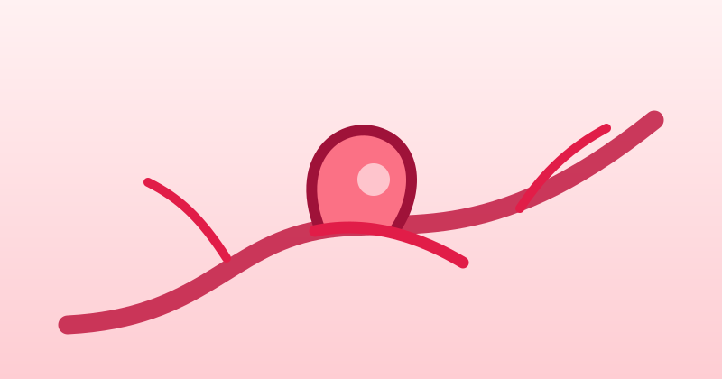
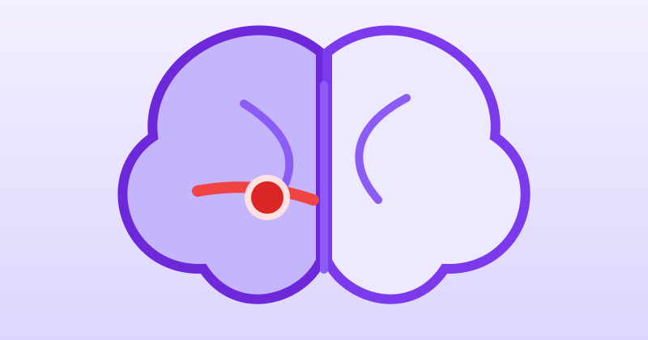
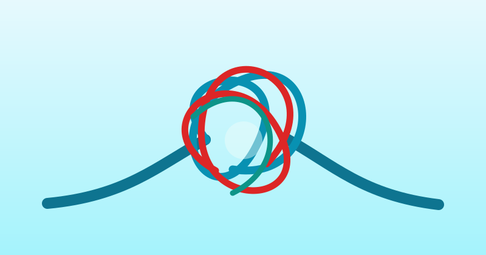
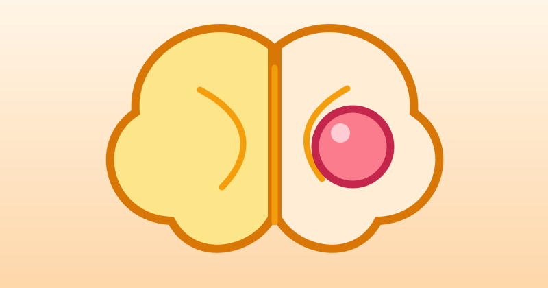

Panamericana · 24 Horas · 2019
Neurointervencionismo y atención de alta complejidad
Reportaje sobre la labor del Dr. Pacheco, el tratamiento de Yola Polastri y la importancia del angiógrafo cerebral.
Ver fuente oficialNeurocirujano · Especialista en Neurointervencionismo
Médico Neurocirujano con 24 años de servicio en el Hospital Nacional Daniel Alcides Carrión del Callao, donde lideró su Unidad de Neurointervencionismo. Actualmente atiende en las clínicas Delgado, Sanna San Borja, Sanna El Golf e Internacional del centro de Lima.

El Dr. Henry Pacheco Fernández Baca es un destacado neurocirujano cusqueño, especialista en neurointervencionismo (neurocirugía endovascular), un campo que permite diagnosticar y tratar enfermedades cerebrales sin necesidad de cirugía abierta, solo con punciones y microcatéteres.
El Dr. Pacheco es considerado un referente nacional en el tratamiento de patologías cerebrales y cerebrovasculares. Trabajó 24 años en el Hospital Nacional Daniel Alcides Carrión del Callao, donde dirigió y consolidó la Unidad de Neurointervencionismo, única en el Perú y en hospitales MINSA con infraestructura y personal dedicado exclusivamente a este tipo de enfermedades.
Actualmente atiende en las clínicas Delgado, Sanna San Borja, Sanna El Golf e Internacional del centro de Lima, brindando atención de la más alta calidad en neurocirugía y neurointervencionismo.
Amplia experiencia en el diagnóstico y tratamiento de enfermedades del sistema nervioso y vascular cerebral.
Diagnóstico y tratamiento endovascular de aneurismas rotos y no rotos, con técnicas mínimamente invasivas.

Atención de emergencia del infarto y hemorragia cerebral, restableciendo el flujo sanguíneo cerebral.

Tratamiento de malformaciones arteriovenosas y fístulas durales mediante embolización.

Manejo quirúrgico y endovascular de tumores cerebrales y meningiomas.

Tratamiento de enfermedades de la columna vertebral y médula espinal.
Estudios angiográficos con reconstrucción 3D para diagnóstico de precisión de patologías neurovasculares.
Atención médica en sus sedes, tanto en el sector privado como público.
Neurócirugía y Neurointervencionismo
Av. Guardia Civil 337, San Borja
Neurocirugía y atención especializada
Centro de Lima
24 años de servicio · Unidad de Neurointervencionismo
Unidad pionera en el Perú dentro de hospitales MINSA, liderada por el Dr. Henry Pacheco durante sus 24 años en el hospital.
Escríbeme o llámame por WhatsApp para coordinar tu cita en la clínica de tu preferencia.
Líder indiscutible de la Unidad de Neurointervencionismo, reconocido como referente nacional en tratamiento de patologías cerebrales.
Autor de publicaciones indexadas en revistas internacionales sobre malformaciones arteriovenosas y neurocirugía endovascular.
Comprometido con la atención de emergencias las 24 horas, incluso fuera de su turno, priorizando siempre la vida del paciente.
Ha brindado atención neuroquirúrgica de alta complejidad a reconocidas figuras públicas del país, como la animadora Yola Polastri.
Participaciones del Dr. Henry Pacheco en medios nacionales e instituciones de salud.
Reportaje sobre la labor del Dr. Pacheco, el tratamiento de Yola Polastri y la importancia del angiógrafo cerebral.
Ver fuente oficialConversación médica con el Dr. Tomás Borda sobre el stroke, sus riesgos y la necesidad de una atención oportuna.
Ver fuente oficialEl Dr. Pacheco explica en qué consiste la técnica endovascular y cómo permite tratar un aneurisma cerebral.
Ver fuente oficialHistorias reales de pacientes y familiares que confiaron en el Dr. Pacheco.
"Increíble humano, tiene paciencia y sobre todo es un gran profesional. Salvó la vida de mi hija de 15 años. Entró por emergencia y sin ser su día de trabajo, él no dudó en intervenirla. Dios lo bendiga, porque él salva vidas."
"Fui atendida por el Doctor y encontré al mejor. Tenía diagnóstico de aneurisma cerebral. El Dr. Henry no solo es un trome en su especialidad, sino también resalta su calidad humana, elemento que muchos médicos pierden en el camino."
Las experiencias recibidas se revisan antes de su publicación para proteger la privacidad de los pacientes.
Para programar una consulta presencial o virtual, comunícate por los siguientes medios. La atención es con previa cita.